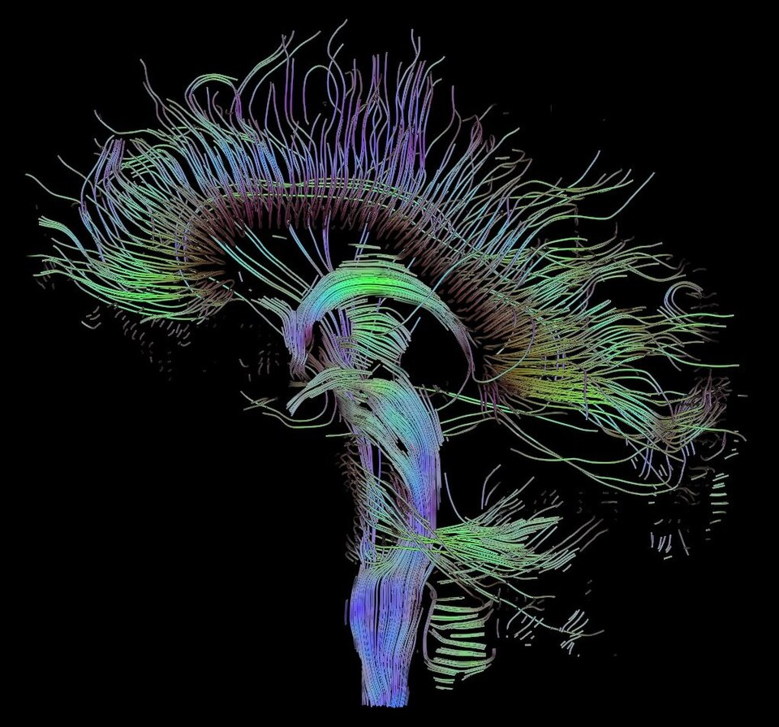
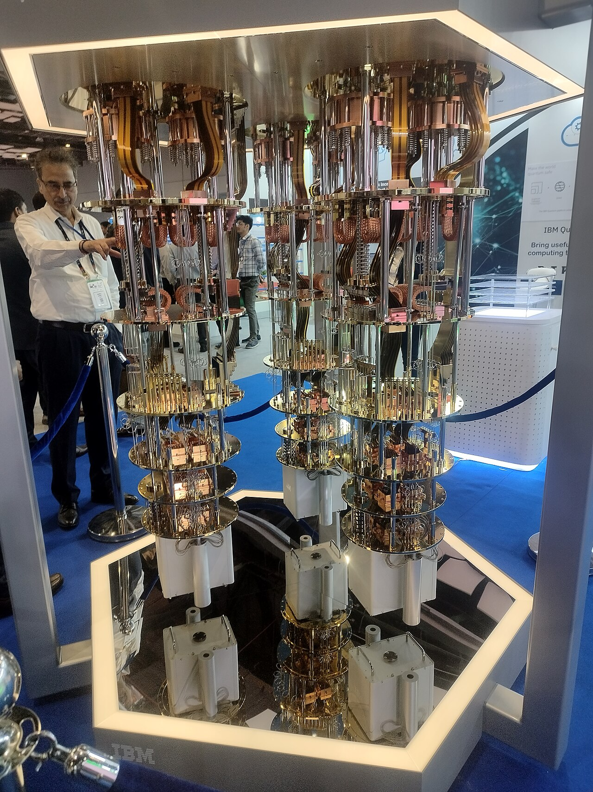
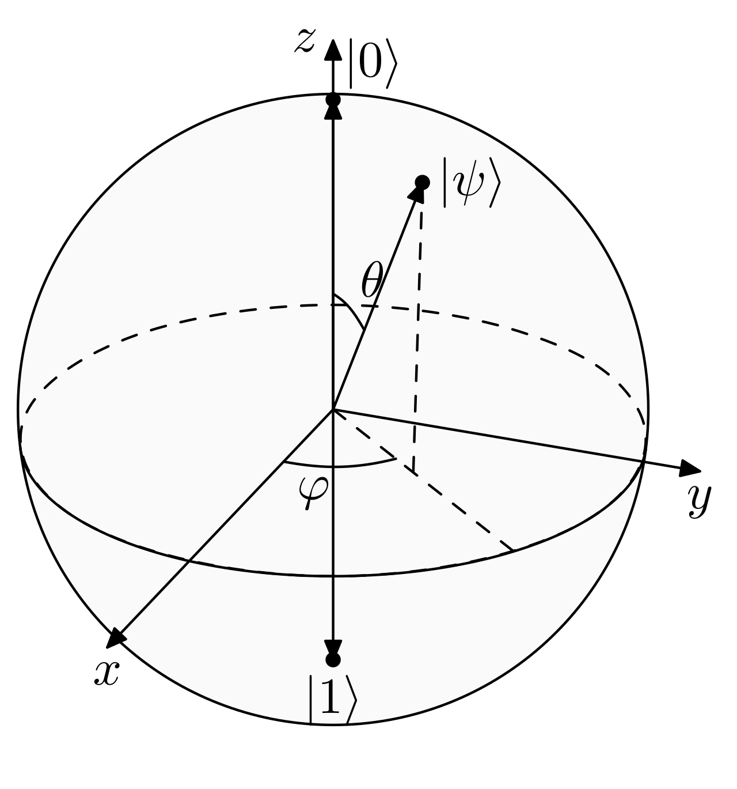
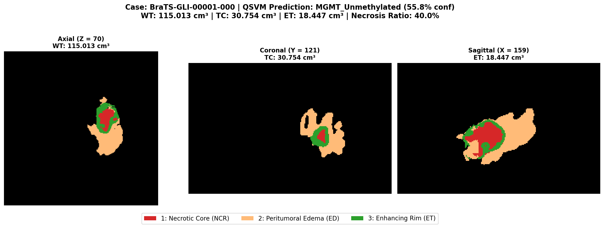
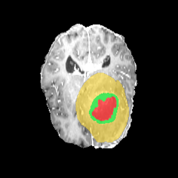
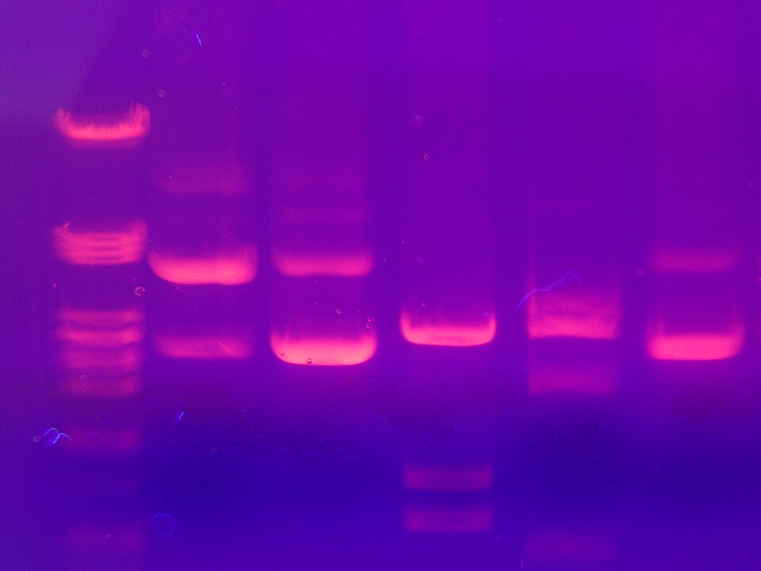
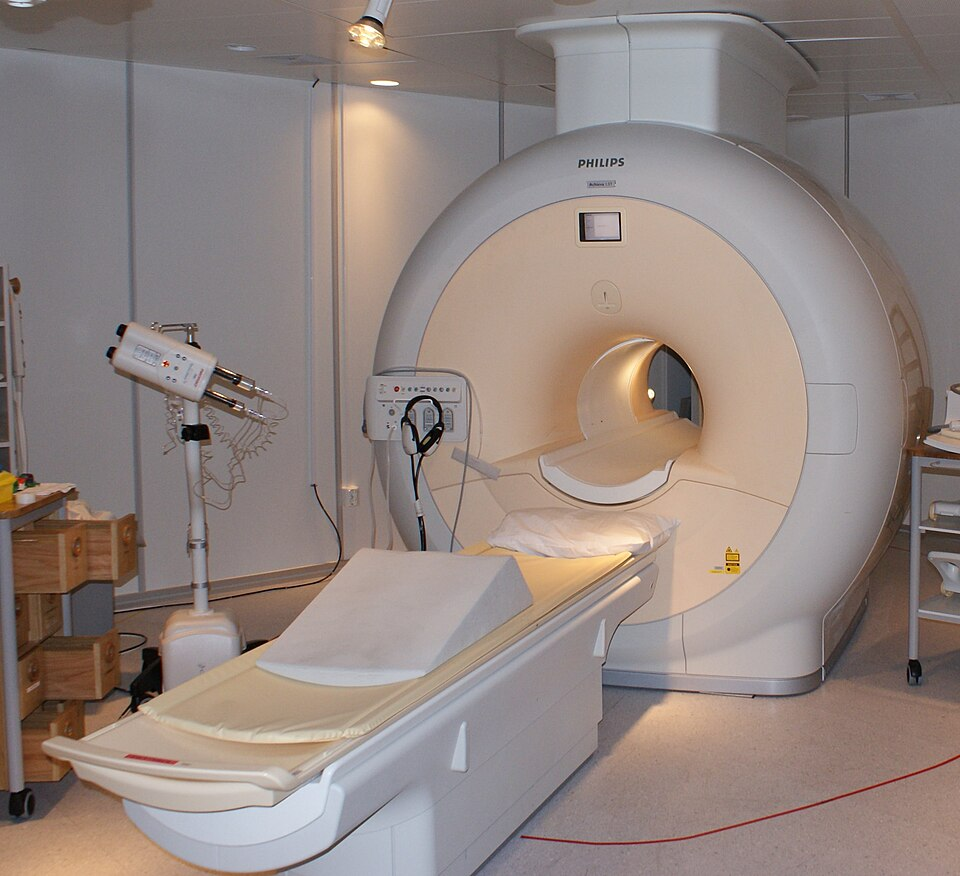
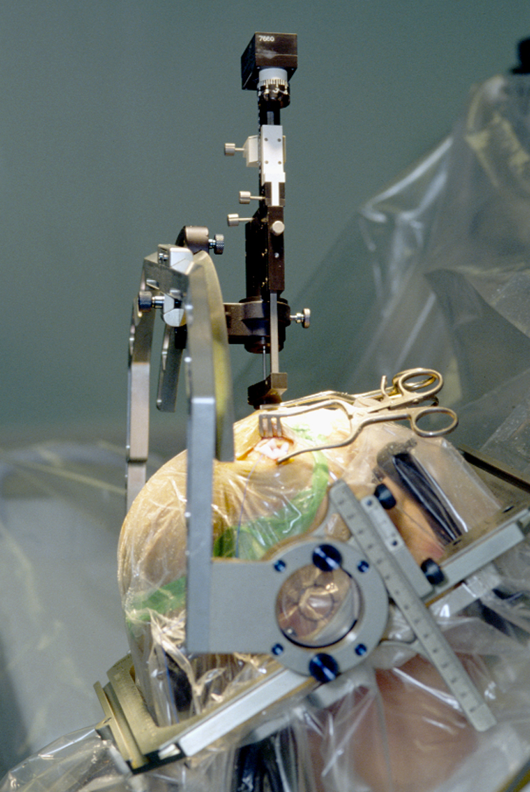

Scanvidence is a hybrid quantum-classical research platform uniting 3D volumetric deep learning, standardized IBSI radiomics, and physical quantum computing on IBM Heron to transform neuro-oncology imaging into auditable clinical evidence.
Foundational research milestones across 3D computer vision, combinatorial quantum optimization, and explainable AI for neuro-oncology.

Ultra-compact 1.6M parameter architecture with VAE regularization branch, delineating active tumor, necrotic core, and edema in 1.6s.

Ising Hamiltonian combinatorial optimization selecting 9 orthogonal biomarkers from 107 collinear IBSI features with J = 0.491 stability.

Evaluates non-linear quantum state overlap for MGMT methylation stratification with calibrated entropy uncertainty bounds.

Delivers visual voxel attention heatmaps paired with mathematical TreeSHAP attributions to eliminate clinical black-box skepticism.
A single patient volume is progressively transformed from raw multi-modal MRI voxels into quantifiable radiomics, quantum optimization, and explainable evidence.

Every stage operates as an independently importable, unit-tested module following strict neuro-oncology standards.
Co-registration, skull-stripping, and non-zero voxel z-score intensity normalization across T1-Native, T1c, T2, and T2-FLAIR modalities.
Ultra-compact 3D SegResNetB0 architecture (1.6M parameters) with VAE reconstruction branch loss, achieving 92.2% Whole Tumor Dice.
Extraction of 107 standardized 3D shape, first-order intensity, and GLCM/GLRLM texture biomarkers strictly conforming to international IBSI protocols.
Combinatorial feature selection formulated as an Ising Hamiltonian solved on a physical 156-qubit IBM Heron QPU (Ground Energy E = -3.0981).
Mapping continuous radiomics into a 512-dimensional complex Hilbert space via ZZFeatureMap, achieving +6.7% AUC lift over classical RBF SVM.
Coupled 3D Grad-CAM voxel localization with TreeSHAP biomarker force decomposition, compiled into an NRCES ABDM Milestone-2 HL7/FHIR JSON report.
Feature selection in radiomics is notoriously prone to collinear collapse. Rather than relying on classical heuristic lasso filters, we formulate orthogonal biomarker selection as an NP-hard Quadratic Unconstrained Binary Optimization (QUBO) problem executed on IBM's flagship 156-qubit Heron architecture.
Global minimum found across 10,000 physical measurement shots on the IBM Fez / Heron backend.
More than double the stability of Classical LASSO (J = 0.215) and RFE (J = 0.261) across patient subsampling.
9 selected orthogonal biomarkers embedded via 2-qubit entangling ZZFeatureMap gates in 110ms edge runtime.
Scientific dispatches, clinical trial progress, and computational neuroscience publications from our lab.
Our multi-institution study demonstrates that formulating MRI texture selection as an Ising Hamiltonian resolves feature collinearity that has plagued clinical radiomics for a decade.

How point-of-care GPU execution bridges the gap between tertiary neuro-centers and rural government hospitals without recurring per-scan cloud licensing fees.

By reporting entropy uncertainty bounds (±43.0%) alongside molecular predictions, Scanvidence flags low-confidence border cases for confirmatory wet-lab tissue PCR.
Peer-reviewed papers, challenge proceedings, and reproducibility datasets underpinning the platform.
WunderBär Research Consortium (Anas Khalid, Ali Hasan, Abdul Malik, et al.)
Structured Abstract: Glioblastoma Multiforme (GBM) diagnosis is severely bottlenecked by manual 3D anatomical contouring and delayed post-surgical molecular testing. We present an end-to-end edge-native research instrument coupling 3D SegResNetB0 (1.6M parameters, 92.2% Whole Tumor Dice) with combinatorial feature selection on a physical 156-qubit IBM Heron processor. Quantum optimization doubles biomarker selection stability (J = 0.491) over classical LASSO, yielding pre-operative molecular risk triage with calibrated entropy uncertainty in 1.6 seconds.
Scanvidence is engineered for direct deployment in district hospitals, medical colleges, and regional cancer care networks under the Ayushman Bharat Digital Mission (ABDM).
Compresses 25–30 minutes of tedious manual contouring into a 2-minute clinical verification, allowing India's ~10,500 radiologists to serve the 1:130,000 specialist deficit efficiently.
Delivers pre-operative molecular risk triage at under ₹50 per scan in amortized edge compute—compared to ₹15,000 to ₹25,000 for wet-lab tissue PCR with 14-day turnaround delays.

Zero-cloud point-of-care architecture that packages findings into encrypted NRCES HL7/FHIR DiagnosticReport documents linked to the patient's ABHA ID for tele-oncology escalation.
Developed for Smart India Hackathon 2026 (Problem Statement SIH26139).
Clinical triage orchestration, WHO CNS5 compliance, and full-stack medical workstation architecture.
3D SegResNetB0 implementation, VAE regularization loss, and BraTS benchmark volumetric tuning.
IBM Heron 156Q QUBO formulation, Ising Hamiltonian optimization, and 9-qubit QSVM kernel execution.
IBSI 107 texture extraction, TreeSHAP force decomposition, and calibrated entropy uncertainty bounds.
Zero-dependency Python server, multi-planar WebGL orthogonal slicer, and PDF print diagnostic engine.
ABDM Milestone-2 HL7/FHIR JSON integration, ABHA ID linkage, and hospital health economics.
Scanvidence is an investigational computational research instrument and clinical decision-support prototype (CADt). It is not cleared for independent clinical diagnosis or treatment planning. All volumetric contours and molecular risk estimates must be validated by board-certified radiologists and neuro-pathologists with confirmatory tissue biopsy.